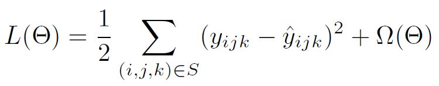
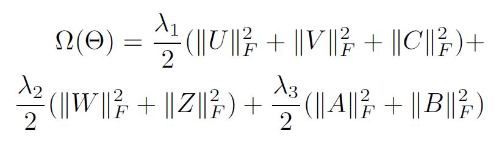

IOT and Context-Aware Mobile Recommendations
Using Multi-agent Systems
(Paper by: Bartlomiej Twardowski and Dominik Ryzko)
EBC5389 E-Commerce Architecture
Armaan Dhir
Chandan Kalra
Structure
Introduction
IOT and Mobile Context
Big Data Server Side Agents Architecture
Mobile Side Agents Architecture
Recommender System
EX: Dietary/Fitness Recommendation
Conclusion
Introduction
Aim
A Multi-Agent System for generating personalized recommendations on mobile devices with the use of Contextual data acquired from IOT
'Model to Data' paradigm
- Model-base is constructed using machine learning computations
- Precomputed parts of model are fetched from server side
- Recommendations are generated on client using contextual data
IOT and Mobile Context
Data in the IOT
Data can be obtained in various ways:
- Radio Frequency Identifiers (RFID)
- Beacons
- Sensors and electronics with some intelligence
NFC: a special case of RFID
Adopted by mobile manufacture for secured data exchange
IPv6 and RESTful services are used to communicate
IOT and Mobile Context
Context in IOT
To structure the concept of context the following definition is proposed:
- A context describes a situation and the environment a device or user is in
- A context is identified by a unique name
- For each context a set of features is relevant
- For each relevant feature a range of values is determined (implicit or explicit) by the context
A Collaborative context determination scheme is used to overcome the problem of sensor readings
Big Data Server Side Agents Architecture
- Mobile devices produce huge amount of data which have to be collected
- Data: Contextual, implicit/explicit user interactions etc
- Efficient and reliable storage is required
- Data preparation and exploration is performed
- learning of CARS2 factorization model using SGD
Similar as most today's Big Data applications with machine learning
For handling it in a real-time the Multi-Agent solution is proposed
Big Data Server Side Agents Architecture
Big Data Server Side Agents Architecture
Edge Services
- Dedicated layer resides on server side
- Serves all the remote requests
- DataSycn agent
- Serves as communicaton between server side and mobile device
DataSycn Agent
- Responsible for a management of data synchronization process
- Process: Data initiation, coordination and exchange
- Directed from mobile side to server
- Information like user events(feedback, context) are send
Big Data Server Side Agents Architecture
Mobile device limits and challenges
1. We assume an unreliable communication channel between the mobile device and the server side
A bi-directional synchronization is being used.
2. Computation power and storage is limited on mobile
- Latent-feature model having low dimension is precomputed
- Precomputed model is sent to device hosting Recommender Agent
- Model exchange only happens during the synchronization phase
Big Data Server Side Agents Architecture
MAS Lambda Architecture
Batch Layer
- Storage on distributed system and processing in large periodic jobs
Online layer
- Processing new events from streaming data
- Builds the incremental changes to batch layer results
-Output is the prepared recommendation model: Rec. Model Agent
-Recommender Model Guard requests only appropriate part for specific user
Mobile Side Agents Architecture
Mobile Side Agents Architecture
Data Sycn Agent
- Similar gateway for data synchronization as DataSycn Agent
- Initiates data exchange with server when connection is available
- During Syncchronization, Mobile-Rec. Model Agent is fetched on device
- Event data is sent from the Context Agent to the Event Collector Agent
Context Agent
- Responsible for handling all contextual information
- such as: user feedback and sensor data
- has own limited storage for collecting event data before sync
Mobile Side Agents Architecture
Sensor Agent
- Handles all sensors and related data
- Can act as Active or Passive depending on the device
- Active: host a sensor agent by by itself
- Passive: pull information from other sensor
- passive is called Sensor Reciever Agent
Mobile Side Agents Architecture
Recommender Actor
- Most inportant for mobile device
- Responsible for preparing best recommendation under current context
- Mobile Rec. Model Agent should be presented with its mobile model parameters(formula)
- Recommender Agent receives information from the Context Agent about the surrounding context changes
- Sends information to Notification Agent when items are available
Notification Agent
- Gives information to the user of mobile device
- Can be: Push notifications, TTS commands etc
Recommender System
CARS2 system is used (2 layers)
- Mobile just-in-time CARS
- 2 Dimensional based collaborative-filtering
- Context latent space is separated from itmes and users
- First layer: Matrix factorization besed on users and items
- Second layer: Tensor factorization for context-aware latent features
Input data is tensor
Recommender System
Prediction:

To learn latent features models, loss function is defined
parameters under optimization and training examples S
Recommender System
Regularization term which control magnitude of parameters:

For in-time mobile recommendations, not all parameters are used.
From Prediction equation, parameters for single mobile user is obtained
EX: Dietary/Fitness Recommendation
- App to achieve predefined goals: loosing weight, fitness level etc
- Tracks amount of exercise, food/supplements intakes
- Traditional apps require manual input of user activity
Argues that input can be streamlined using context information available by IOT
EX: DIETARY/FITNESS RECOMMENDATION
Set of specialized recommender models is being precomputed on a server
Specific models can refer to categories or products:
- supplements and vitamins
- sportswear
- restaurants
- particular excercises etc
Models are based on history of user and activities
Models are periodically updated and pushed to mobile
EX: DIETARY/FITNESS RECOMMENDATION
To calculate final recommendations, app computes user context
collection of data available in environment is used:
- mobile device sensors e.g. accelerometer, GPS location
- wearable sensors e.g. pulsemeter
- other devices e.g. an electronic weight, a treadmill with wireless connectivity capabilities
- data from other applications and services e.g. calendar (personal and family members), healthcare record
After Collection such data, the app can calculate higher level contect such as:
user fitness level, current activity, fatigue, next predicted activity etc.
EX: DIETARY/FITNESS RECOMMENDATION
Application can combine a precomputed model with the context elements and come up with the recommended items.
For example:
Once we identify that the user has finishes exercising session we can-
- propose a supplement suitable for the current fatigue
- training duration, overall health level etc
Another model can be used to recommend-
- a nearby restaurant for a meal adequate to the amount of calories burned
- daytime, current weight or next physical exercise to achieve fitness goals
Conclusion
- Multi-Agent architecture based on Big Data approach on the server side while taking advantage of lightweight agents located on mobile devices
- Limits the communication between the user mobile device and the server. "Model to Data" approach
Limitations
- Doesn't talk about minimal computational power required in mobile
- Evaluation of acceptance rate of recommendations
- Cost of data synchronization